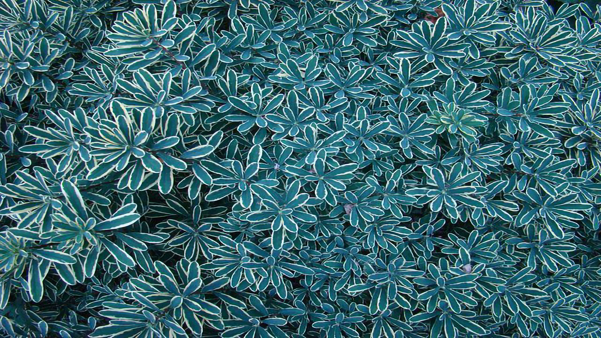
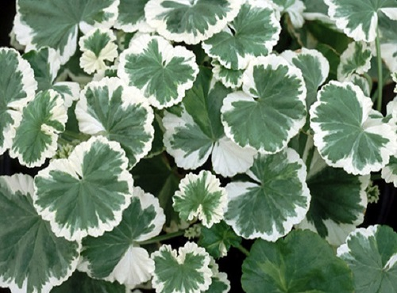

The ultimate guide to variegation
Variegation has recently become an extremely prevalent trend in the field of plant-care. Whatever the reason for that is, one can't deny that variegated plants have become the preeminent plants, sought after by countless green-thumbs.
What is variegation?
Variegation is the appearance of different strokes of colour in the leaves and stems of plants. Variegation in nature is an extremely rare occurrence, whereas it has recently become fairly commonly spotted among indoor plants. Some plant lovers even argue that variegated plants are more suitable for widening the dynamic range of colours inside their homes. So what is the essence that makes variegation so unique, why does it occur, and, most importantly, can it harm the plants?
What causes variegation?
Why are the leaves actually green, you may wonder? The leaf tissue comprises of an ever-important pigment of green colour, called chlorophyll. As it can be seen from the graph below, there are actually two types of chlorophyll, A and B. Both best absorb the red and blue spectra of visible light, and reflect the green spectrum of light. Consequently, since the green light is reflected, the leaves appear as green. Thus, variegation can be spotted if the plant tissue is distorted in any way, causing the visible light to reflect differently off the surface of the leaf. The different structure of plant tissue, therefore, accounts for our eyes perceiving a particular area of the leaf as not green.

There can be distinguished between three different types of variegation:
- chimeral
- pigmentary
- pathological
Chimeral variegation
Chimeral variegation is the most common form of variegation. Chimeral variegation is a consequence of a genetic mutation, where the structure of the leaf tissue is altered. If particular leaf-tissue-producing cells (such cells comprise a layer of tissue inside a plant which is referred to as the meristem) undergo genetic mutations, they might stop producing chlorophyll. Consequently, there is some leaf tissue in the plant which doesn't contain chlorophyll, which therefore appears to be differently coloured than the leaf tissue which contains chlorophyll.
There exist three different forms of chimeral plants: periclinal, mericlinal and sectorial:
- periclinal chimeral variegation is the most common and stable type of chimeras. In this case, one entire layer of cells in the meristem have suffered from a genetic mutation. To understand how this type of variegation works, it is important to understand how the plants grow. All parts of the plants are comprised of plant cells, which undergo the process of cell division, as a result of which the plant grows. Therefore, if only one mutated cell is present in the meristem, it might divide horizontally (this type of division is scientifically referred to as anticlinal cell division) to form an entire layer of mutated cells. 
- mericlinal chimeral variegation is substantially more unstable than periclinal variegation. The main difference between the mericlinal and periclinal variegation is that in the case of mericlinal chimeras, only one portion of the meristem contains mutated cells. Mericlinal chimeras are often just a transition between either eventually transforming into periclinal chimeras or losing the mutated plant tissue.
sectorial chimeral variegation occurs when an entire half of multiple cell layers in the meristem contain mutated cells. This type of chimeras is relatively unstable. As the cells in the meristem divide outwards, it is easy for either a "healthy" or mutated layer of cells to be produced over the entire width of a leaf.
Pigmentary variegation

Pigmentary variegation is another common form of variegation, which is characterised by the appearance of other pigments, such as anthocyanins, which results in the leaf containing two or more different colours. This type of variegation often engulfs the whole leaves, making them either reddish or purplish in the case of the appearance of anthocyanins.
Pathological variegation
Pathological variegation is a result of a viral infection of the plant. The most evident of a virus attacking the plant is irregular patterning. An especially recognised is the appearance of the mosaic pattern on the leaf type effect. Although rather dangerous for the well-being of the plant, most common house plants do extremely rarely suffer from such infections, and you should count yourself as lucky, should your plant have the unluck to get infected by such a virus.
Potential harm for the plant
Variegated leaf tissue does not contain the pigment chlorophyll, which carries out the process of photosynthesis. Photosynthesis is the process by which the plants acquire nutrients (mainly glucose) for their growth. With the absence of chlorophyll in some of the plant cells, the plant's full photosynthetic potential is reduced. In turn, the plant is unable to create as many nutrients as it could have, which consequently slows down the growth of the plant.
Conclusive thoughts
Variegated plant tissue is inherently coupled with lower effectiveness of photosynthesis, a crucial process by which the plants create glucose for their growth and other cellular processes, as a result of which variegated plants may grow slower. Furthermore, should the variegation be a consequence of a viral infection, there is very little one could do to aid the plant in need.
On the other hand, however, as the case of a virus attacking common house plants is extremely rare and the variegated plant tissue itself never substantially hinders the growth of the plant in the long run, variegation is in the majority of the cases only about the aesthetics, more than the health of the plant. Thus, it is up to each individual to consider whether they might want to add variegated plant species to their plant collection to spice the colours up or stick to the greener plants. Nevertheless, should any variegation occur, an alarm needs not to be raised, since it, in most cases, will not harm the plant.